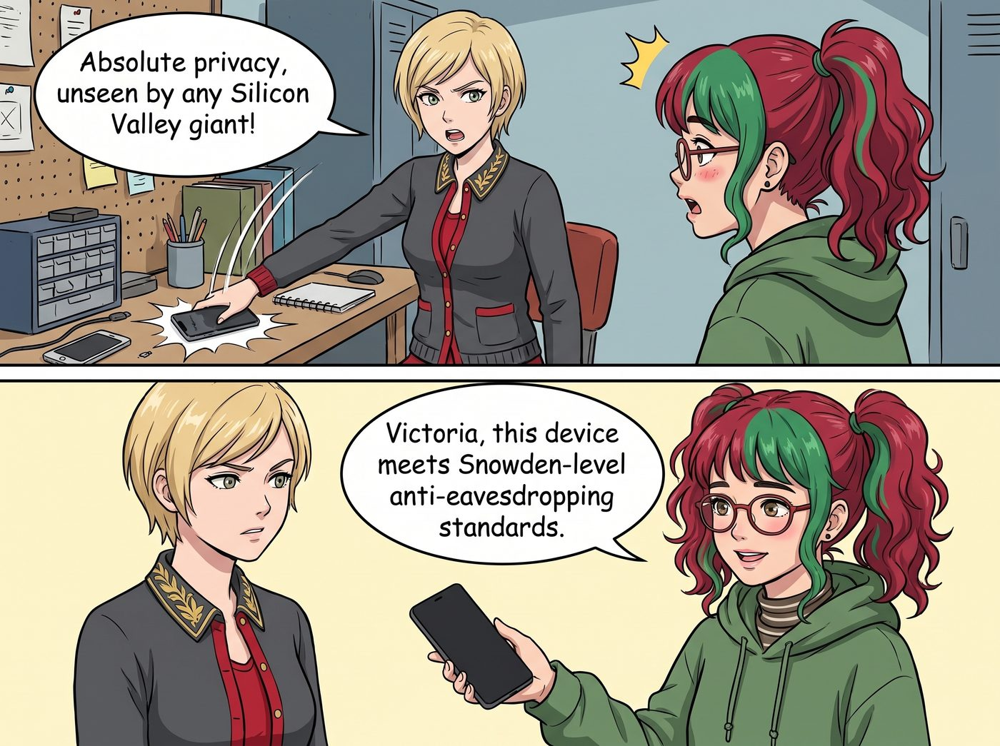

數位脫逃計畫

Victoria Chase 的「數位脫逃計畫」在實施不到四十八小時後，迎來了一場比被演算法監視還要慘烈的社會性死亡。
這一切始於她將那台象徵著財閥階級的頂配 iPhone 狠狠砸在 Lily 的工作台上，強烈要求實習生為她打造一台「絕對隱私、沒有任何矽谷巨頭能偷窺」的幽靈設備。Lily 欣然接受了這個挑戰，不到兩小時，她便交給 Victoria 一台刷了開源 LineageOS、徹底閹割了所有商業服務的黑色 Pixel 手機。
「Victoria 學姐，這台設備達到了斯諾登級別的防監聽標準。」Lily 溫柔地宣告。
一、失去資本主義便利的原始人
Victoria 一開始覺得自己簡直是個對抗賽博獨裁的隱私鬥士，直到她走進西雅圖市中心那家最喜歡的高級手沖咖啡館。
結帳時，名媛習慣性地舉起手腕想用手錶支付，卻發現手腕上反饋空空如也（因為無法與開源系統配對）。她皺著眉頭掏出那台黑色的 Pixel，試圖呼叫行動支付，卻看著螢幕上毫無反應的極簡介面陷入了沉思——沒有任何商業金融憑證的底層授權。
「不好意思，小姐，您需要用實體卡片或現金嗎？」店員的眼神裡帶著一絲不易察覺的同情。
Victoria 屈辱地在包包裡翻找著她已經大半年沒碰過的實體黑卡，感覺自己就像個剛從上個世紀穿越過來的原始人。站在她身後的 Chloe 毫不留情地發出了爆笑：「快看啊！Chase 財團的繼承人居然在手動刷卡！」
二、智商歸零的工作流
真正的災難發生在下午的畫廊營運上。過去，庫克的生態系像個隱形的頂級秘書，會自動讀取 Victoria 的電子郵件，將 VIP 藏家的航班資訊加入行事曆，並根據路況自動彈出導航提醒。
但現在，這台注重隱私的手機就像一塊極度安全的「磚頭」。它絕不偷窺用戶數據，這意味著它什麼都記不住，什麼都不會主動做。
Victoria 完美地錯過了與一位重要歐洲藏家的視訊會議。當她氣急敗壞地看著手機時，這台乾淨的設備安靜得彷彿在嘲笑她：沒有行事曆彈窗，甚至連輸入法都因為缺乏雲端詞庫，而在她打出「Chase 畫廊」時頻頻自動選字成「Cheese 畫廊」。
「我的生活變成了一場混亂的災難！」Victoria 抓著頭髮，崩潰地倒在車廂的沙發上，「這破手機連我喜歡在下午三點聽什麼歌都不知道！這根本不是人在玩手機，是手機在逼我手動管理我的人生！」
三、向消費主義屈膝
坐在對面的 Max 舉起相機，將名媛抱著頭崩潰的模樣拍了下來：「這就是隱私的代價，Victoria。沒有人監視妳，代表沒有人伺候妳了。」
「而且，Victoria 學姐，」Lily 捧著一杯熱茶，語氣依然軟糯純潔，「您今天錯過了三個重要會議，導致畫廊的潛在損失高達七萬美金。」
Victoria 猛地抬起頭，眼角甚至帶著一絲屈辱的淚光。
她顫抖著伸出手：「把我的 iPhone 還給我。把我的 Apple Watch 還給我。我承認我就是一個離不開消費主義演算法的廢物。讓提姆·庫克監視我的心跳吧！我寧願被當成數據賣掉，也不要再手動輸入會議時間了！」
Lily 露出了一個早有預料的甜美微笑，轉身從一個防電磁波的法拉第籠裡，拿出了那台充滿電的 iPhone，雙手奉上。
「歡迎回到文明社會，Victoria。」Chloe 幸災樂禍地拍了拍她的肩膀。而 Kate 則溫柔地遞上一塊剛烤好的蔓越莓餅乾，安撫著這位被絕對隱私折磨得體無完膚的名媛。
這場數位叛逃就這樣戲劇性地落幕了。